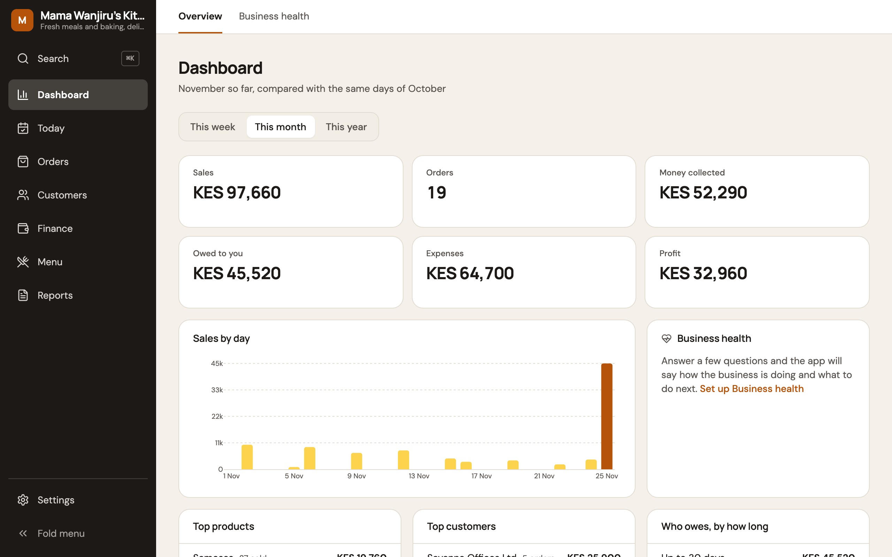
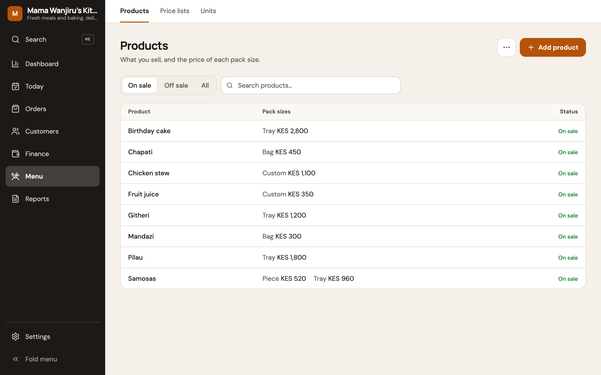
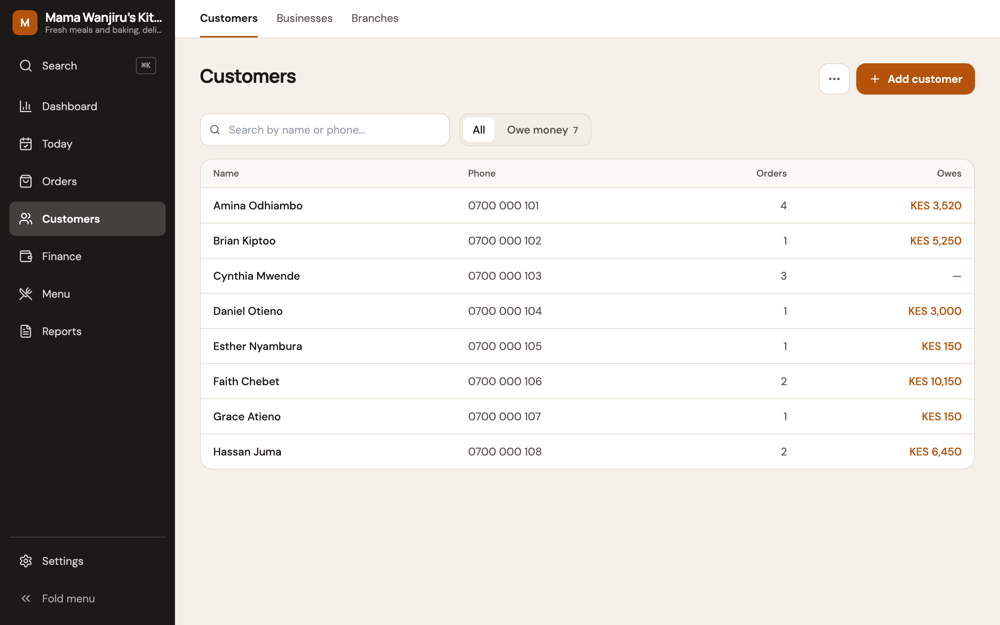
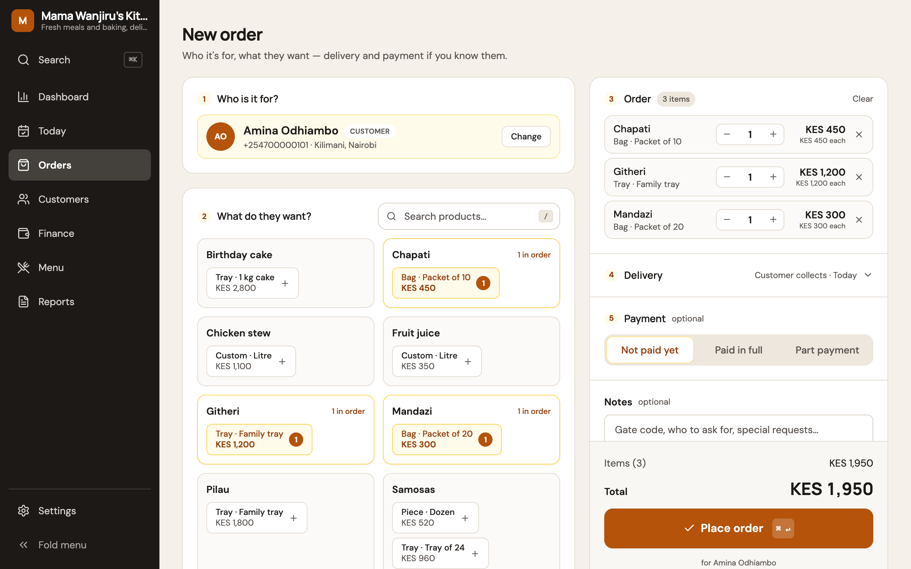
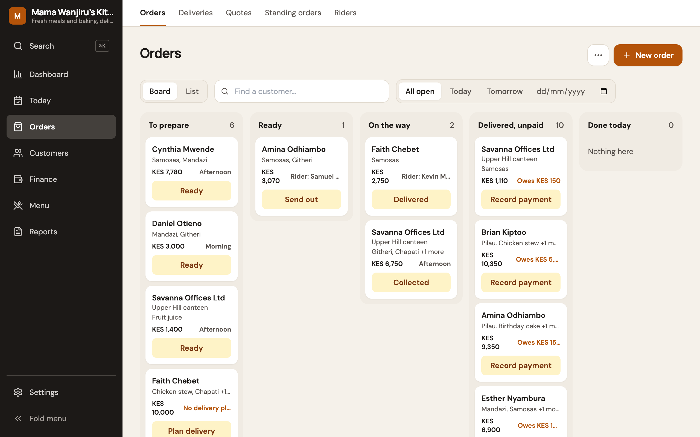
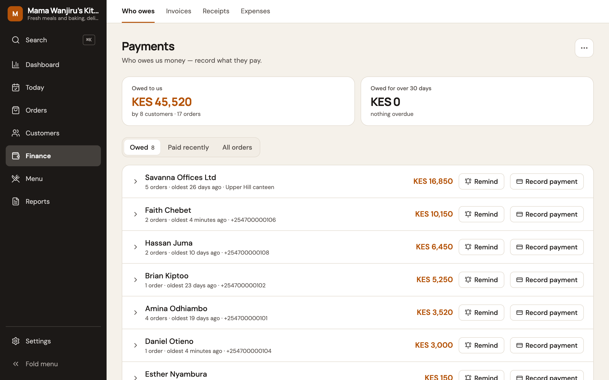
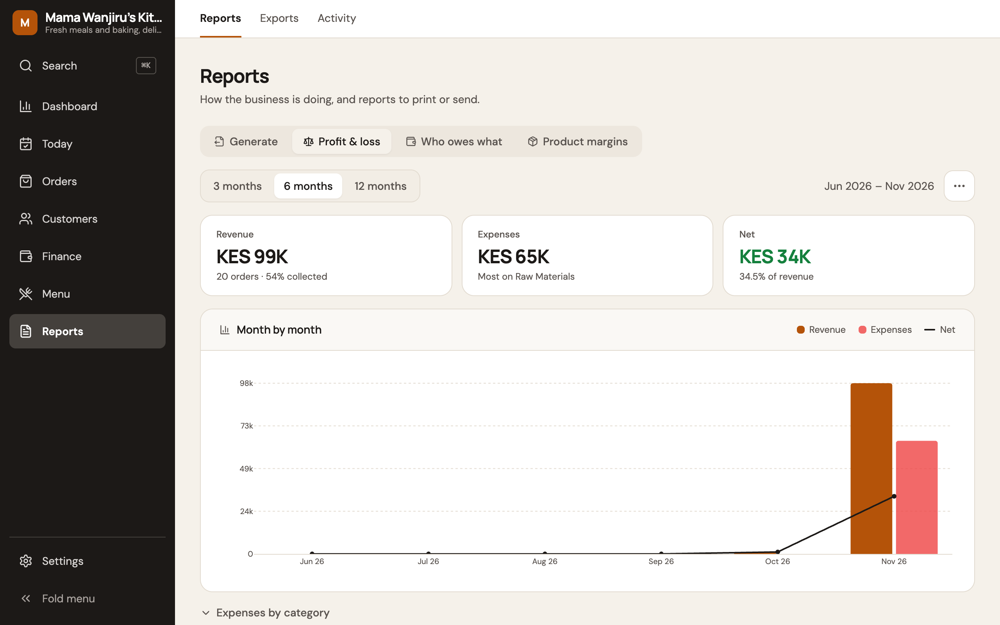

One list for every order
Each order shows who it is for, what they asked for, when it goes out and whether it has been paid.
Know who owes you
See every unpaid balance by customer, record a payment when it arrives, and keep a receipt for it.
Your numbers, without a spreadsheet
Sales, expenses and profit are added up for you, and the reports can be printed or saved.
A walk through Vina Tsama
Follow a small kitchen that sells chapati, samosas and pilau, from setting up its menu to checking its month. The names and numbers here are made up.
-
Put your menu and prices in
Open Menu and add each thing you sell, with a price for each pack size: a packet of chapati, a tray of samosas, a family tray of pilau. You do this once, then change a price whenever it changes.

-
Add your customers
Open Customers and add a name, a phone number and an address for each person you sell to. Businesses with several branches can be added too. The list shows how many orders each customer has made and how much they still owe.

-
Take an order
Press New order, pick the customer, then tap the pack sizes they want. The total adds up on the right. You can also say how it will be delivered and whether they have paid, then press Place order.

-
Follow each order to the door
The Orders page shows every open order in columns: to prepare, ready, on the way and delivered. Use the button on each card to move an order along, for example Ready, then Send out, then Delivered. Orders that were delivered but not paid for stay in their own column so they are not forgotten.

-
Record payments as they come in
Open Payments to see who owes you, how much, and how long ago their oldest order was. Press Record payment when money arrives. You can record cash or M-Pesa, and part payments are allowed.

-
Check how the month went
Open Reports to see sales, expenses and profit month by month. The same page has reports on who owes what and on each product, and you can view, print or save them. Expenses you record along the way, like ingredients and fuel, are counted automatically.

Get Vina Tsama
Runs on a Mac or a Windows computer. Your information stays on that computer. It is not sent to us. You only need the internet for the first install and to check for updates.
- Press Download and get the file ending in
-mac.zipor-windows.zip. - Unzip it and double-click Install Vina Tsama. The first install downloads what the app needs, so it takes a few minutes.
- If your computer warns about an unidentified developer (Mac) or SmartScreen (Windows), the Read me first file in the zip shows how to continue.
- Open Vina Tsama from Applications (Mac) or the Start menu (Windows). On the first run, a short setup asks for your business details and first products.